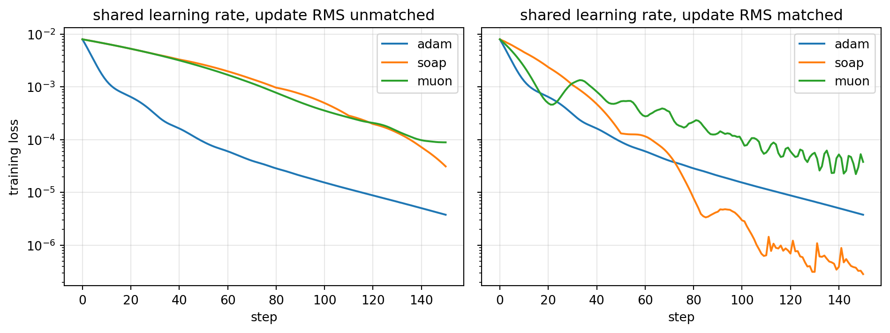

Adaptive gradient methods reshaped how deep networks are trained, but their interaction with regularization turned out to be subtler than the original formulations suggested. This chapter examines why \(L_2\) regularization and weight decay diverge for adaptive optimizers, how AdamW corrects the discrepancy, and how subsequent methods such as AMSGrad, Lion, and Adafactor extend or rethink the design space.
202.1 1. Background: Adam and Its Update Rule
Adam maintains exponential moving averages of the gradient and its element wise square. Let \(g_t = \nabla_\theta f_t(\theta_{t-1})\) be the stochastic gradient at step \(t\). Adam computes
where the square is taken element wise. Because \(m_0 = v_0 = 0\), both estimates are biased toward zero early in training, so Adam applies bias correction:
The quantity \(\sqrt{\hat{v}_t} + \epsilon\) is the source of the adaptivity. Coordinates with large historical gradient magnitude receive small effective steps, and coordinates with small gradients receive large ones. This per coordinate rescaling is exactly what creates trouble for regularization.
202.2 2. Why \(L_2\) Regularization and Weight Decay Differ
For plain stochastic gradient descent the two notions coincide. Adding an \(L_2\) penalty \(\frac{\lambda}{2}\|\theta\|^2\) to the loss contributes a gradient term \(\lambda \theta\), so the update becomes
The factor \((1 - \alpha\lambda)\) shrinks every weight multiplicatively toward zero. This multiplicative shrinkage is what the term weight decay originally meant, and for SGD it is algebraically identical to the gradient of an \(L_2\) penalty.
202.2.1 2.1 The adaptive preconditioner breaks the equivalence
Now insert the same penalty into Adam. The penalty gradient \(\lambda \theta_{t-1}\) is folded into \(g_t\), so it flows through both moving averages and, crucially, through the denominator \(\sqrt{\hat{v}_t}\). The effective decay applied to coordinate \(i\) is no longer \(\alpha \lambda\) but approximately
Weights whose gradients have been large, and therefore have large \(\hat{v}_{t,i}\), are decayed weakly, while weights with small gradient history are decayed strongly. The intended uniform pull toward the origin becomes a non uniform one that depends on the curvature estimate. This is precisely the wrong behavior: the parameters that most need regularization, those that have grown large because their gradients were persistently large, are the ones shielded from decay.
202.2.2 2.2 Coupling also entangles the penalty with adaptivity
A second problem is that the \(L_2\) term participates in the first moment \(m_t\) and the bias correction. The regularization signal is smoothed and rescaled jointly with the data gradient, so the strength of regularization becomes implicitly coupled to the learning rate schedule and to \(\beta_2\). Tuning \(\alpha\) then changes the effective amount of regularization, which makes hyperparameter search awkward and non orthogonal.
202.3 3. AdamW: Decoupled Weight Decay
Loshchilov and Hutter proposed separating the decay from the gradient based update entirely. Rather than adding \(\lambda \theta\) to the gradient, AdamW applies the decay directly to the parameters, outside the adaptive preconditioner:
Because \(\lambda \theta_{t-1}\) never enters \(m_t\) or \(v_t\), every coordinate is shrunk by the same factor \((1 - \alpha\lambda)\) regardless of its gradient history. The decay is now genuine weight decay again rather than a curvature warped approximation of it.
# AdamW step, schematic
m = b1*m + (1-b1)*g
v = b2*v + (1-b2)*g*g
mhat = m / (1 - b1**t)
vhat = v / (1 - b2**t)
theta = theta - lr * (mhat / (sqrt(vhat) + eps) + wd * theta)
202.3.1 3.1 A precise statement of the decoupling
It is worth writing the two updates side by side so the single point of divergence is unambiguous. Let \(P_t = \operatorname{diag}\!\big(\sqrt{\hat v_t} + \epsilon\big)\) be the diagonal preconditioner. L2-regularized Adam folds the penalty into the gradient, \(\tilde g_t = g_t + \lambda \theta_{t-1}\), and feeds \(\tilde g_t\) through the moment recursions, giving
where \(\hat m_t\) is built from the unpenalized gradient \(g_t\) alone. The decay term \(-\alpha\lambda\,\theta_{t-1}\) carries no \(P_t^{-1}\) factor and never enters \(m_t\) or \(v_t\). Collecting the \(\theta_{t-1}\) terms recovers the multiplicative form \(\theta_t = (1-\alpha\lambda)\,\theta_{t-1} - \alpha P_t^{-1}\hat m_t\). The substantive content of AdamW is exactly the absence of \(P_t^{-1}\) on the decay term: every coordinate contracts by the same factor \((1-\alpha\lambda)\) irrespective of its accumulated curvature \(\hat v_{t,i}\).
A useful sanity check is the fixed point. Suppose training reaches a coordinate where the data gradient is zero, \(g_{t}=0\). Then \(\hat m_t \to 0\), the adaptive term vanishes, and the AdamW update reduces to pure geometric shrinkage \(\theta_t = (1-\alpha\lambda)\,\theta_{t-1}\), pulling that weight cleanly toward the origin. Under coupled L2 the same coordinate would still be shrunk, but by the curvature-warped amount \(\alpha\lambda\,\theta_{t-1,i}/(\sqrt{\hat v_{t,i}}+\epsilon)\), which depends on a stale second-moment estimate that has nothing to do with the regularizer. The reference implementation below makes this fixed point a unit test.
202.3.2 3.2 Practical consequences
Decoupling has two practical payoffs. First, the optimal weight decay \(\lambda\) becomes far more stable across learning rates, so the two hyperparameters can be tuned more independently. Loshchilov and Hutter report that the region of good \((\alpha, \lambda)\) pairs becomes much wider and more diagonal under decoupling. Second, decoupling consistently improves generalization on image and language benchmarks, and it has become the default optimizer for training transformers. When a schedule scales \(\alpha\) over training, note that the decay magnitude \(\alpha\lambda\) scales with it as well, so some implementations decouple the schedule from the decay too.
202.3.3 3.3 A note on the bias of the denominator
The argument above also clarifies why decoupling matters more for adaptive methods than for momentum SGD. The damage comes specifically from dividing the penalty by \(\sqrt{\hat{v}_t}\). Any optimizer with a per coordinate preconditioner inherits the same pathology, which is why decoupled decay is now standard not only for Adam but for related methods such as LAMB and RAdam.
202.4 4. AMSGrad: Fixing a Convergence Gap
Reddi, Kale, and Kumar identified a separate flaw in Adam, unrelated to regularization. Adam can fail to converge even on simple convex problems because the effective learning rate \(\alpha / \sqrt{\hat{v}_t}\) can increase from one step to the next. When a rare but large and informative gradient is later forgotten by the exponential average, the denominator shrinks and the step grows, which can undo prior progress.
AMSGrad enforces a non increasing effective step by maintaining the running maximum of the second moment:
Because \(\hat{v}_t^{\max}\) never decreases, the per coordinate step size is monotonically non increasing, which restores the regret guarantee that the original Adam analysis claimed but did not actually achieve. In practice AMSGrad rarely improves final accuracy on large modern workloads, and the extra state and the permanently conservative steps can even hurt. Its lasting value is theoretical: it pinpointed why the original convergence proof was flawed and showed that the fix is a monotone denominator. AMSGrad combines cleanly with decoupled decay, giving an AMSGradW variant.
202.5 5. Lion: Sign Based Updates from Symbolic Search
Lion, short for Evolved Sign Momentum, was discovered by Chen and colleagues through a symbolic program search over optimizer update rules rather than designed by hand. Its update is strikingly simple and stores only a single momentum buffer, half the state of Adam.
Two design choices stand out. First, the update direction is \(\operatorname{sign}(c_t)\), so every coordinate moves by the same magnitude \(\alpha\), modulated only by decoupled weight decay. This is a uniform step in the \(\ell_\infty\) geometry rather than the per coordinate adaptive step of Adam. Second, Lion uses two distinct momentum coefficients: the interpolation \(\beta_1\) inside the sign couples the current gradient more tightly, while the buffer update \(\beta_2\) tracks a longer history. The default values reverse the usual intuition, with \(\beta_1\) around \(0.9\) and \(\beta_2\) around \(0.99\).
202.5.1 5.1 Why the sign matters
Because the step magnitude is fixed at \(\alpha\) per coordinate, Lion behaves like a normalized optimizer. The update norm is decoupled from the gradient norm, which improves robustness to gradient scale and to loss spikes. The trade off is that the effective learning rate is typically three to ten times smaller than Adam’s, and the weight decay correspondingly larger, because each step is now a unit sign vector. Lion has shown strong results on large vision and language models with reduced memory, although its advantage narrows on smaller or noisier problems where the discarded magnitude information was useful. The decoupled decay term shows that the AdamW lesson carried directly into Lion’s design.
202.6 6. Adafactor: Adaptive Rates at Sublinear Memory
The per coordinate second moment \(v_t\) has the same shape as the parameters, so Adam roughly triples the memory of the model weights, once for \(m_t\) and once for \(v_t\). For very large embedding and projection matrices this overhead is prohibitive. Adafactor, by Shazeer and Stern, removes most of it.
202.6.1 6.1 Factored second moments
For a parameter matrix of shape \(n \times m\), Adafactor does not store the full second moment matrix \(V_t\). Instead it stores per row and per column sums and reconstructs a rank one approximation. Let \(R_t \in \mathbb{R}^n\) accumulate row sums and \(C_t \in \mathbb{R}^m\) accumulate column sums of the squared gradients. The estimate of entry \((i,j)\) is
This is the minimum divergence rank one reconstruction under a generalized Kullback Leibler objective, and it reduces the second moment memory from \(O(nm)\) to \(O(n + m)\). Matrices keep the factored form; vectors and scalars fall back to the full per element second moment.
202.6.2 6.2 Relative step sizes and update clipping
Adafactor also removes the first moment by default and replaces the externally tuned learning rate with a relative step size proportional to the root mean square of the current parameters, so that the update scale tracks the parameter scale automatically. To control the rare large steps that a missing first moment can produce, it clips the update by its root mean square norm:
for a threshold \(d\). These choices let Adafactor train very large models, and it became a standard optimizer for T5 scale transformers. The cost is that the rank one approximation and the absent momentum can slightly degrade convergence relative to a well tuned AdamW, so the choice is usually driven by memory rather than by final quality.
# Adafactor factored second moment, schematic
R = decay*R + (1-decay)*(g*g).sum(axis=cols)
C = decay*C + (1-decay)*(g*g).sum(axis=rows)
V_hat = outer(R, C) / R.sum()
update = g / sqrt(V_hat)
202.7 7. Choosing Among the Methods
The four methods address different axes of the same problem. AdamW fixes how regularization interacts with adaptivity and is the safe default for most supervised and self supervised training. AMSGrad addresses a worst case convergence guarantee that rarely binds in practice but is worth understanding as a cautionary tale about proof gaps. Lion trades per coordinate adaptivity for a memory light, scale robust sign update that shines at large scale. Adafactor trades a small amount of optimization quality for dramatic memory savings on the largest models.
A useful unifying view is that each method is a choice of preconditioner and a choice of how regularization enters relative to that preconditioner. Adam and AdamW share the diagonal \(1/\sqrt{\hat{v}_t}\) preconditioner and differ only in whether decay passes through it. AMSGrad changes the preconditioner to a monotone variant. Lion replaces the preconditioner with a sign nonlinearity. Adafactor approximates the preconditioner with a factored estimate. In all cases the AdamW insight holds: regularization should act on the parameters directly, not be filtered through whatever adaptive scaling the optimizer applies to gradients.
202.8 8. Higher-Order Optimizers: Muon, SOAP, and Update-RMS Matching
Every method surveyed so far treats a weight matrix as a bag of independent scalars. Adam, AdamW, AMSGrad, Lion, and Adafactor all build a preconditioner that acts entrywise, so the matrix structure of a linear layer is invisible to the optimizer. A useful way to see what that assumption costs is the linear minimization oracle view: the update direction is the minimizer of a linearized objective over a norm ball, and the choice of norm is what separates optimizer families. The Adam family implicitly picks an elementwise norm, while matrix-aware or higher-order methods such as Shampoo and Muon pick a spectral norm, which respects the fact that a weight matrix acts on vectors rather than on coordinates. Khona et al. (2026) take the two leading representatives of this family, Muon and SOAP, and push them to language model pretraining scale, reporting that both consistently beat AdamW at the scales they tested and that the advantage is largest at very large batch sizes, up to roughly 100M tokens per batch.
Muon keeps a single momentum buffer with the same shape as the weight matrix, \(M_t = \mu M_{t-1} + G_t\), and then discards its singular values entirely. Writing the singular value decomposition \(M_t = U \Sigma V^\top\), the update direction is the orthogonal factor of the polar decomposition,
Because \(UV^\top\) has all singular values equal to one, it is exactly the maximizer of \(\langle M_t, \Delta \rangle\) over the unit spectral norm ball, which is the linear minimization oracle solution for the spectral geometry. Every direction in the row and column space is advanced by the same amount, so a direction whose gradient signal is small is not starved by a large one. In production the SVD is replaced by a few steps of a Newton-Schulz style polynomial iteration, which needs only matrix multiplies and stays in low precision. One consequence matters below: for an \(m \times n\) matrix, \(\|UV^\top\|_F^2 = \min(m,n)\), so \(\mathrm{RMS}(\mathrm{ortho}(M)) = 1/\sqrt{\max(m,n)}\), a number that shrinks as layers get wider.
SOAP starts from Shampoo, which accumulates two second-moment matrices, one on each side of the gradient,
with the Shampoo step \(\Delta W_t \propto L_t^{-1/4} G_t R_t^{-1/4}\). SOAP observes that most of Shampoo’s benefit comes from the rotation, not the inverse roots. Eigendecomposing \(L_t = Q_L \Lambda_L Q_L^\top\) and \(R_t = Q_R \Lambda_R Q_R^\top\), it rotates the gradient into that basis, runs an ordinary AdamW update there, and rotates back:
The eigenbasis is refreshed only every \(f\) steps, typically every ten to a few hundred, which amortizes the decomposition cost across many cheap AdamW steps. The remaining obstacles are numerical rather than conceptual, and this is where Khona et al. (2026) contribute: they stabilize SOAP under large batch training with QR orthogonalization in place of a fragile eigendecomposition and with improved preconditioner accumulation, then build a layer-wise distributed optimizer compatible with Megatron-LM so that the per-layer preconditioner work is sharded rather than replicated, and release the resulting codebase.
The methodological contribution is separate from either algorithm and is the part most likely to change how you read optimizer papers. Define the update root mean square for a matrix update \(\Delta W \in \mathbb{R}^{m \times n}\) as
Different optimizers emit updates of systematically different scale at the same nominal learning rate. An elementwise AdamW update has \(|U_{ij}| \approx 1\) by construction, so \(\mathrm{RMS} \approx 1\), whereas Muon’s orthogonalized update has \(\mathrm{RMS} = 1/\sqrt{\max(m,n)}\), which is about \(0.03\) for a \(1024 \times 1024\) layer. Comparing the two at a shared \(\alpha\) therefore compares steps that differ by more than an order of magnitude in size, and the result mostly measures how well each learning rate happened to be tuned. Update-RMS matching removes that confound: measure each optimizer’s characteristic \(\mathrm{RMS}(\Delta W)\) over a short calibration window, then fix a constant per-optimizer factor \(c_o = \rho / \overline{\mathrm{RMS}}_o\) that rescales its update to a common target \(\rho\) before the shared learning rate is applied. This is a reparameterization, not a per-step normalization, so it leaves the within-run dynamics intact while putting all optimizers on the same step-size footing. The specific recipe stated here, a short measurement window followed by one frozen constant per optimizer, is our concrete rendering of that principle rather than a transcription of the paper’s exact calibration protocol; treat the constants and the window length as knobs, not as a fixed algorithm.
The cell below makes the point concrete on an ill-conditioned matrix least squares problem, comparing an elementwise Adam update, a Muon-style orthogonalized update, and a SOAP-style eigenbasis Adam update, first at a shared learning rate and then with their update RMS matched. Decoupled weight decay is left out of all three arms, since it acts on the parameters rather than on the update direction and so plays no role in the update-RMS argument; the elementwise arm is therefore labeled adam, not adamw.
import numpy as npimport matplotlib.pyplot as pltrng = np.random.default_rng(0)d, k, n =32, 32, 256# Ill-conditioned matrix least squares: f(W) = ||X W - Y||_F^2 / (2n).Q1, _ = np.linalg.qr(rng.standard_normal((n, d)))Q2, _ = np.linalg.qr(rng.standard_normal((d, d)))X = (Q1 * np.logspace(0.0, -2.0, d)) @ Q2.T # condition number 100W_star = rng.standard_normal((d, k)) / np.sqrt(d)Y = X @ W_stardef loss_grad(W): R = X @ W - Yreturn0.5* np.sum(R * R) / n, (X.T @ R) / ndef rms(A):returnfloat(np.sqrt(np.mean(A * A)))def ortho(M):"""Orthogonal polar factor U V^T of M = U S V^T (the spectral LMO solution).""" U, _, Vt = np.linalg.svd(M, full_matrices=False)return U @ VtB1, B2, EPS, MOM, FREQ =0.9, 0.95, 1e-8, 0.95, 10def fresh():returndict(t=0, m=np.zeros((d, k)), v=np.zeros((d, k)), L=np.zeros((d, d)), R=np.zeros((k, k)), QL=np.eye(d), QR=np.eye(k))def direction(kind, G, s): s["t"] +=1 t = s["t"]if kind =="muon": # spectral norm LMO s["m"] = MOM * s["m"] + Greturn ortho(s["m"])if kind =="soap": # Adam in Shampoo's eigenbasis s["L"] = B2 * s["L"] + (1- B2) * (G @ G.T) s["R"] = B2 * s["R"] + (1- B2) * (G.T @ G)if (t -1) % FREQ ==0: # slow eigenbasis refresh s["QL"] = np.linalg.eigh(s["L"])[1] s["QR"] = np.linalg.eigh(s["R"])[1] G = s["QL"].T @ G @ s["QR"]# Adam moments. Decoupled weight decay is omitted from every arm: it acts on# the parameters, not on the update direction, so it cannot affect update RMS. s["m"] = B1 * s["m"] + (1- B1) * G s["v"] = B2 * s["v"] + (1- B2) * G * G U = (s["m"] / (1- B1**t)) / (np.sqrt(s["v"] / (1- B2**t)) + EPS)return s["QL"] @ U @ s["QR"].T if kind =="soap"else UCALIB, STEPS, LR =10, 150, 0.01def run(kind, scale=1.0): W, s, hist, mags = np.zeros((d, k)), fresh(), [], []for i inrange(STEPS): f, G = loss_grad(W) hist.append(f) U = scale * direction(kind, G, s)if i < CALIB: # calibration window mags.append(rms(U)) W = W - LR * U hist.append(loss_grad(W)[0])return np.array(hist), float(np.mean(mags))kinds = ["adam", "soap", "muon"]raw = {kd: run(kd) for kd in kinds}target = raw["adam"][1] # common update RMS targetmatched = {kd: run(kd, scale=target / raw[kd][1]) for kd in kinds}print(f"target update RMS = {target:.4f} (shared lr = {LR})")print(f"{'optimizer':<8}{'RMS raw':>8}{'scale':>7}{'RMS matched':>12}"f" {'loss raw':>11}{'loss matched':>13}")for kd in kinds:print(f"{kd:<8}{raw[kd][1]:8.4f}{target / raw[kd][1]:7.2f}{matched[kd][1]:12.4f}"f" {raw[kd][0][-1]:11.3e}{matched[kd][0][-1]:13.3e}")fig, ax = plt.subplots(1, 2, figsize=(10, 3.8), sharey=True)for kd in kinds: ax[0].semilogy(raw[kd][0], label=kd) ax[1].semilogy(matched[kd][0], label=kd)ax[0].set_title("shared learning rate, update RMS unmatched")ax[1].set_title("shared learning rate, update RMS matched")ax[0].set_ylabel("training loss")for a in ax: a.set_xlabel("step") a.grid(alpha=0.3) a.legend()plt.tight_layout()plt.show()
target update RMS = 0.8672 (shared lr = 0.01)
optimizer RMS raw scale RMS matched loss raw loss matched
adam 0.8672 1.00 0.8672 3.787e-06 3.787e-06
soap 0.3284 2.64 0.9322 3.122e-05 2.839e-07
muon 0.1768 4.91 0.8672 8.927e-05 3.803e-05

Figure 202.1: Loss curves for Adam, SOAP, and Muon style updates on an ill-conditioned matrix least squares problem. At a shared learning rate (left) Adam appears to dominate, but once each optimizer’s update RMS is matched to a common target (right) SOAP overtakes it by more than a factor of ten, while Muon roughly halves its deficit and still finishes about an order of magnitude above Adam.
usingLinearAlgebra# Muon: replace the momentum matrix by the orthogonal factor of its polar decomposition.ortho(M) = (F =svd(M); F.U * F.Vt)rms(A) =sqrt(sum(abs2, A) /length(A))# Update RMS matching: one constant per optimizer, calibrated on a short warmup.match_scale(target, measured_rms) = target / measured_rmsfunctionmuon_step!(W, M, G; lr =0.01, mom =0.95, scale =1.0) M .= mom .* M .+ G W .-= (lr * scale) .*ortho(M)return Wend
usenalgebra::DMatrix;/// Orthogonal polar factor U V^T of M = U S V^T (the spectral norm LMO solution).fn ortho(m:&DMatrix<f64>) -> DMatrix<f64>{let svd = m.clone().svd(true,true); svd.u.as_ref().unwrap() * svd.v_t.as_ref().unwrap()}fn rms(a:&DMatrix<f64>) ->f64{ (a.iter().map(|x| x * x).sum::<f64>() / a.len() asf64).sqrt()}/// One Muon step with a constant update RMS matching factor.fn muon_step(w:&mut DMatrix<f64>, m:&mut DMatrix<f64>, g:&DMatrix<f64>, lr:f64, mom:f64, scale:f64) {*m =&*m * mom + g;*w -= ortho(m) * (lr * scale);}
The printed table tells the story, and it is more nuanced than a glance at the curves suggests. At the shared learning rate the Adam update has RMS near \(0.867\) while Muon’s orthogonalized update sits at exactly \(1/\sqrt{32} \approx 0.1768\) and SOAP’s rotated update lands in between at \(0.328\), so Adam finishes at loss \(3.79 \times 10^{-6}\) against SOAP’s \(3.12 \times 10^{-5}\) and Muon’s \(8.93 \times 10^{-5}\), roughly \(8\times\) and \(24\times\) worse, purely because it is taking much larger steps. Rescaling each optimizer by its calibrated constant reverses the verdict for one of them and only softens it for the other: SOAP drops to \(2.84 \times 10^{-7}\), about thirteen times below Adam, while Muon improves to \(3.80 \times 10^{-5}\), which cuts its deficit from \(24\times\) to roughly \(10\times\) but still leaves it an order of magnitude above Adam. So RMS matching flips the SOAP comparison outright and roughly halves Muon’s gap without closing it. Even that partial correction is the point: the unmatched ranking was substantially an artifact of update scale, which is why Khona et al. (2026) insist on RMS matching before drawing any conclusion about which optimizer converges faster. Muon still trails here because a fixed quadratic rewards the per-direction curvature scaling that SOAP retains and that pure orthogonalization throws away, a caveat worth remembering when reading small-scale optimizer benchmarks.
When should a practitioner actually reach for these? The honest answer is at scale and on matrix-shaped parameters. The gains reported by Khona et al. (2026) appear in language model pretraining with very large batches, exactly the regime where AdamW’s per-coordinate adaptivity saturates and the extra information in the matrix structure has something left to contribute. If you are fine-tuning, training a model that fits on one accelerator, or working with parameters that are mostly vectors and embeddings, AdamW remains the right default: the preconditioner state, the periodic decompositions, and the distributed plumbing are real engineering costs that buy nothing at that scale. Muon and SOAP are also typically applied only to the two-dimensional weights, with biases, norms, and embeddings left on AdamW, so adopting them is a hybrid decision rather than a wholesale switch. And whichever you evaluate, calibrate update RMS before you compare, or your benchmark will measure your learning rate sweep instead of your optimizer.
202.9 9. Summary
The equivalence between \(L_2\) regularization and weight decay is a property of plain gradient descent that adaptive methods quietly break, because dividing the penalty by a per coordinate curvature estimate turns uniform shrinkage into curvature dependent shrinkage. AdamW restores the intended behavior by decoupling decay from the adaptive step, which both improves generalization and makes the learning rate and decay hyperparameters more orthogonal. AMSGrad, Lion, and Adafactor then vary the preconditioner itself, for convergence guarantees, for memory and robustness, and for sublinear state respectively, while inheriting the decoupled decay lesson. Muon and SOAP change the underlying geometry rather than the preconditioner’s entries: reading the update as a linear minimization oracle over a norm ball, they trade the Adam family’s elementwise norm for a spectral one, so a weight matrix is treated as an operator instead of a bag of scalars. That switch also changes the natural size of an update, which makes update-RMS matching a prerequisite for any honest comparison, since two optimizers run at the same nominal learning rate are otherwise taking steps of systematically different magnitude. Understanding which quantity a given optimizer rescales, where regularization enters relative to that rescaling, and how large a step the result actually takes, is the key to reasoning about all of them.
202.10 10. A From-Scratch AdamW Implementation
The companion aiinaction package ships a small, dependency-light AdamW that follows the four-line update exactly: maintain m and v, bias-correct, then take the adaptive step plus a decoupled decay applied straight to the parameters. The same algorithm is implemented in Python, Julia, and Rust, and a shared set of numeric fixtures keeps the three at parity. Below we minimize a diagonal quadratic \(f(x) = \tfrac12 (x - x^\star)^\top A (x - x^\star)\) with \(A = \operatorname{diag}(3, 1)\) and optimum \(x^\star = (2, -1)\), whose gradient is \(\nabla f(x) = A\,(x - x^\star)\).
import numpy as npfrom aiinaction.ch197_adamw import AdamWConfig, init_state, adamw_step, minimize# One explicit step from a clean state, with decoupled weight decay.cfg = AdamWConfig(lr=0.1, beta1=0.9, beta2=0.999, eps=1e-8, weight_decay=0.01)state = init_state(3)theta = adamw_step([1.0, -2.0, 0.5], [0.5, -1.0, 2.0], state, cfg)print("after one step:", np.round(theta, 6))print("first moment m:", np.round(state.m, 6))# Full minimization of the diagonal quadratic.A = np.array([3.0, 1.0])x_star = np.array([2.0, -1.0])grad =lambda x: A * (np.asarray(x) - x_star)x = minimize(grad, [0.0, 0.0], AdamWConfig(lr=0.1), n_steps=200)print("recovered optimum:", np.round(x, 6), "(target [2, -1])")# When the gradient is zero, AdamW reduces to pure shrinkage theta *= (1 - lr*wd).shrink = adamw_step([4.0, -6.0], [0.0, 0.0], init_state(2), AdamWConfig(lr=0.1, weight_decay=0.2))print("zero-gradient shrinkage:", np.round(shrink, 6), "(= [4, -6] * 0.98)")
after one step: [ 0.899 -1.898 0.3995]
first moment m: [ 0.05 -0.1 0.2 ]
recovered optimum: [ 1.999943 -1.000007] (target [2, -1])
zero-gradient shrinkage: [ 3.92 -5.88] (= [4, -6] * 0.98)
usingAIInAction.Ch197Adamw# One explicit step from a clean state, with decoupled weight decay.cfg =AdamWConfig(; lr=0.1, beta1=0.9, beta2=0.999, eps=1e-8, weight_decay=0.01)state =init_state(3)theta =adamw_step!([1.0, -2.0, 0.5], [0.5, -1.0, 2.0], state, cfg)println("after one step: ", round.(theta, digits=6))# Full minimization of the diagonal quadratic grad(x) = A .* (x .- x_star).A = [3.0, 1.0]x_star = [2.0, -1.0]grad(x) = A .* (x .- x_star)x =minimize(grad, [0.0, 0.0], AdamWConfig(; lr=0.1), 200)println("recovered optimum: ", round.(x, digits=6), " (target [2, -1])")
useaiinaction::ch197_adamw::{adamw_step, init_state, minimize, AdamWConfig};fn main() {// One explicit step from a clean state, with decoupled weight decay.let cfg = AdamWConfig { lr:0.1, beta1:0.9, beta2:0.999, eps:1e-8, weight_decay:0.01};letmut state = init_state(3).unwrap();let theta = adamw_step(&[1.0,-2.0,0.5],&[0.5,-1.0,2.0],&mut state,&cfg).unwrap();println!("after one step: {:?}", theta);// Full minimization of the diagonal quadratic grad(x) = A * (x - x_star).let a = [3.0,1.0];let x_star = [2.0,-1.0];let grad =|x:&[f64]|vec![a[0] * (x[0] - x_star[0]), a[1] * (x[1] - x_star[1])];let cfg2 = AdamWConfig { lr:0.1,..AdamWConfig::default() };let x = minimize(grad,&[0.0,0.0],&cfg2,200).unwrap();println!("recovered optimum: {:?} (target [2, -1])", x);}
All three share the fixtures theta = [0.899000002, -1.898000001, 0.3995000005] after the first step and x \approx [1.99994, -1.00001] after 200 steps, agreeing to within 1e-9. The only cross-language caveat is the usual one for iterated floating-point arithmetic: because beta2^t and the sqrt denominator are evaluated in slightly different orders by NumPy’s vectorized kernels versus the scalar Rust and Julia loops, the accumulated rounding can differ in the last bit or two after hundreds of steps, which is why the parity tolerance is 1e-9 rather than exact bit-equality.
202.11 References
Kingma, D. P., and Ba, J. Adam: A Method for Stochastic Optimization. ICLR 2015. https://arxiv.org/abs/1412.6980
Loshchilov, I., and Hutter, F. Decoupled Weight Decay Regularization. ICLR 2019. https://arxiv.org/abs/1711.05101
Reddi, S. J., Kale, S., and Kumar, S. On the Convergence of Adam and Beyond. ICLR 2018. https://arxiv.org/abs/1904.09237
Chen, X., et al. Symbolic Discovery of Optimization Algorithms (Lion). NeurIPS 2023. https://arxiv.org/abs/2302.06675
Shazeer, N., and Stern, M. Adafactor: Adaptive Learning Rates with Sublinear Memory Cost. ICML 2018. https://arxiv.org/abs/1804.04235
You, Y., et al. Large Batch Optimization for Deep Learning: Training BERT in 76 Minutes (LAMB). ICLR 2020. https://arxiv.org/abs/1904.00962
Liu, L., et al. On the Variance of the Adaptive Learning Rate and Beyond (RAdam). ICLR 2020. https://arxiv.org/abs/1908.03265
Khona, M., Vavre, A., et al. SOAP, Muon, and Beyond: Pushing LLM Pretraining Scales. 2026. https://arxiv.org/abs/2607.20548
Khona, Mikail, Aditya Vavre, Boxiang Wang, Deyu Fu, Hao Wu, Mike Chrzanowski, Bryan Catanzaro, et al. 2026. “SOAP, Muon, and Beyond: Pushing LLM Pretraining Scales.”arXiv Preprint arXiv:2607.20548.
Source Code
# AdamW and Beyond: Decoupled Weight Decay and the Modern Optimizer LandscapeAdaptive gradient methods reshaped how deep networks are trained, but their interaction with regularization turned out to be subtler than the original formulations suggested. This chapter examines why $L_2$ regularization and weight decay diverge for adaptive optimizers, how AdamW corrects the discrepancy, and how subsequent methods such as AMSGrad, Lion, and Adafactor extend or rethink the design space.## 1. Background: Adam and Its Update RuleAdam maintains exponential moving averages of the gradient and its element wise square. Let $g_t = \nabla_\theta f_t(\theta_{t-1})$ be the stochastic gradient at step $t$. Adam computes$$m_t = \beta_1 m_{t-1} + (1 - \beta_1) g_t, \qquad v_t = \beta_2 v_{t-1} + (1 - \beta_2) g_t^2,$$where the square is taken element wise. Because $m_0 = v_0 = 0$, both estimates are biased toward zero early in training, so Adam applies bias correction:$$\hat{m}_t = \frac{m_t}{1 - \beta_1^t}, \qquad \hat{v}_t = \frac{v_t}{1 - \beta_2^t}.$$The parameter update divides the smoothed gradient by a per coordinate scale:$$\theta_t = \theta_{t-1} - \alpha \, \frac{\hat{m}_t}{\sqrt{\hat{v}_t} + \epsilon}.$$The quantity $\sqrt{\hat{v}_t} + \epsilon$ is the source of the adaptivity. Coordinates with large historical gradient magnitude receive small effective steps, and coordinates with small gradients receive large ones. This per coordinate rescaling is exactly what creates trouble for regularization.## 2. Why $L_2$ Regularization and Weight Decay DifferFor plain stochastic gradient descent the two notions coincide. Adding an $L_2$ penalty $\frac{\lambda}{2}\|\theta\|^2$ to the loss contributes a gradient term $\lambda \theta$, so the update becomes$$\theta_t = \theta_{t-1} - \alpha \big( g_t + \lambda \theta_{t-1} \big) = (1 - \alpha \lambda)\,\theta_{t-1} - \alpha g_t.$$The factor $(1 - \alpha\lambda)$ shrinks every weight multiplicatively toward zero. This multiplicative shrinkage is what the term weight decay originally meant, and for SGD it is algebraically identical to the gradient of an $L_2$ penalty.### 2.1 The adaptive preconditioner breaks the equivalenceNow insert the same penalty into Adam. The penalty gradient $\lambda \theta_{t-1}$ is folded into $g_t$, so it flows through both moving averages and, crucially, through the denominator $\sqrt{\hat{v}_t}$. The effective decay applied to coordinate $i$ is no longer $\alpha \lambda$ but approximately$$\frac{\alpha \lambda \, \theta_{t-1,i}}{\sqrt{\hat{v}_{t,i}} + \epsilon}.$$Weights whose gradients have been large, and therefore have large $\hat{v}_{t,i}$, are decayed weakly, while weights with small gradient history are decayed strongly. The intended uniform pull toward the origin becomes a non uniform one that depends on the curvature estimate. This is precisely the wrong behavior: the parameters that most need regularization, those that have grown large because their gradients were persistently large, are the ones shielded from decay.### 2.2 Coupling also entangles the penalty with adaptivityA second problem is that the $L_2$ term participates in the first moment $m_t$ and the bias correction. The regularization signal is smoothed and rescaled jointly with the data gradient, so the strength of regularization becomes implicitly coupled to the learning rate schedule and to $\beta_2$. Tuning $\alpha$ then changes the effective amount of regularization, which makes hyperparameter search awkward and non orthogonal.## 3. AdamW: Decoupled Weight DecayLoshchilov and Hutter proposed separating the decay from the gradient based update entirely. Rather than adding $\lambda \theta$ to the gradient, AdamW applies the decay directly to the parameters, outside the adaptive preconditioner:$$\theta_t = \theta_{t-1} - \alpha \left( \frac{\hat{m}_t}{\sqrt{\hat{v}_t} + \epsilon} + \lambda\, \theta_{t-1} \right).$$Equivalently, and more faithfully to the original derivation, the decay is a multiplicative shrinkage applied independently of the moment based step:$$\theta_t = (1 - \alpha \lambda)\, \theta_{t-1} - \alpha\, \frac{\hat{m}_t}{\sqrt{\hat{v}_t} + \epsilon}.$$Because $\lambda \theta_{t-1}$ never enters $m_t$ or $v_t$, every coordinate is shrunk by the same factor $(1 - \alpha\lambda)$ regardless of its gradient history. The decay is now genuine weight decay again rather than a curvature warped approximation of it.```text# AdamW step, schematicm = b1*m + (1-b1)*gv = b2*v + (1-b2)*g*gmhat = m / (1 - b1**t)vhat = v / (1 - b2**t)theta = theta - lr * (mhat / (sqrt(vhat) + eps) + wd * theta)```### 3.1 A precise statement of the decouplingIt is worth writing the two updates side by side so the single point of divergence is unambiguous. Let $P_t = \operatorname{diag}\!\big(\sqrt{\hat v_t} + \epsilon\big)$ be the diagonal preconditioner. **L2-regularized Adam** folds the penalty into the gradient, $\tilde g_t = g_t + \lambda \theta_{t-1}$, and feeds $\tilde g_t$ through the moment recursions, giving$$\theta_t = \theta_{t-1} - \alpha\, P_t^{-1}\, \widehat{\big(\textstyle\sum \text{EMA of } \tilde g\big)}_t,$$so the penalty is rescaled by $P_t^{-1}$ and additionally smoothed by the first-moment average. **AdamW** instead applies$$\theta_t = \theta_{t-1} - \alpha\, P_t^{-1}\, \hat m_t - \alpha \lambda\, \theta_{t-1},$$where $\hat m_t$ is built from the *unpenalized* gradient $g_t$ alone. The decay term $-\alpha\lambda\,\theta_{t-1}$ carries no $P_t^{-1}$ factor and never enters $m_t$ or $v_t$. Collecting the $\theta_{t-1}$ terms recovers the multiplicative form $\theta_t = (1-\alpha\lambda)\,\theta_{t-1} - \alpha P_t^{-1}\hat m_t$. The substantive content of AdamW is exactly the absence of $P_t^{-1}$ on the decay term: every coordinate contracts by the same factor $(1-\alpha\lambda)$ irrespective of its accumulated curvature $\hat v_{t,i}$.A useful sanity check is the fixed point. Suppose training reaches a coordinate where the data gradient is zero, $g_{t}=0$. Then $\hat m_t \to 0$, the adaptive term vanishes, and the AdamW update reduces to pure geometric shrinkage $\theta_t = (1-\alpha\lambda)\,\theta_{t-1}$, pulling that weight cleanly toward the origin. Under coupled L2 the same coordinate would still be shrunk, but by the curvature-warped amount $\alpha\lambda\,\theta_{t-1,i}/(\sqrt{\hat v_{t,i}}+\epsilon)$, which depends on a stale second-moment estimate that has nothing to do with the regularizer. The reference implementation below makes this fixed point a unit test.### 3.2 Practical consequencesDecoupling has two practical payoffs. First, the optimal weight decay $\lambda$ becomes far more stable across learning rates, so the two hyperparameters can be tuned more independently. Loshchilov and Hutter report that the region of good $(\alpha, \lambda)$ pairs becomes much wider and more diagonal under decoupling. Second, decoupling consistently improves generalization on image and language benchmarks, and it has become the default optimizer for training transformers. When a schedule scales $\alpha$ over training, note that the decay magnitude $\alpha\lambda$ scales with it as well, so some implementations decouple the schedule from the decay too.### 3.3 A note on the bias of the denominatorThe argument above also clarifies why decoupling matters more for adaptive methods than for momentum SGD. The damage comes specifically from dividing the penalty by $\sqrt{\hat{v}_t}$. Any optimizer with a per coordinate preconditioner inherits the same pathology, which is why decoupled decay is now standard not only for Adam but for related methods such as LAMB and RAdam.## 4. AMSGrad: Fixing a Convergence GapReddi, Kale, and Kumar identified a separate flaw in Adam, unrelated to regularization. Adam can fail to converge even on simple convex problems because the effective learning rate $\alpha / \sqrt{\hat{v}_t}$ can increase from one step to the next. When a rare but large and informative gradient is later forgotten by the exponential average, the denominator shrinks and the step grows, which can undo prior progress.AMSGrad enforces a non increasing effective step by maintaining the running maximum of the second moment:$$\hat{v}_t^{\max} = \max\!\big(\hat{v}_{t-1}^{\max},\, v_t\big), \qquad\theta_t = \theta_{t-1} - \frac{\alpha}{\sqrt{\hat{v}_t^{\max}} + \epsilon}\, m_t.$$Because $\hat{v}_t^{\max}$ never decreases, the per coordinate step size is monotonically non increasing, which restores the regret guarantee that the original Adam analysis claimed but did not actually achieve. In practice AMSGrad rarely improves final accuracy on large modern workloads, and the extra state and the permanently conservative steps can even hurt. Its lasting value is theoretical: it pinpointed why the original convergence proof was flawed and showed that the fix is a monotone denominator. AMSGrad combines cleanly with decoupled decay, giving an AMSGradW variant.## 5. Lion: Sign Based Updates from Symbolic SearchLion, short for Evolved Sign Momentum, was discovered by Chen and colleagues through a symbolic program search over optimizer update rules rather than designed by hand. Its update is strikingly simple and stores only a single momentum buffer, half the state of Adam.$$c_t = \beta_1 m_{t-1} + (1 - \beta_1) g_t, \qquad\theta_t = \theta_{t-1} - \alpha \big( \operatorname{sign}(c_t) + \lambda \theta_{t-1} \big),$$$$m_t = \beta_2 m_{t-1} + (1 - \beta_2) g_t.$$Two design choices stand out. First, the update direction is $\operatorname{sign}(c_t)$, so every coordinate moves by the same magnitude $\alpha$, modulated only by decoupled weight decay. This is a uniform step in the $\ell_\infty$ geometry rather than the per coordinate adaptive step of Adam. Second, Lion uses two distinct momentum coefficients: the interpolation $\beta_1$ inside the sign couples the current gradient more tightly, while the buffer update $\beta_2$ tracks a longer history. The default values reverse the usual intuition, with $\beta_1$ around $0.9$ and $\beta_2$ around $0.99$.### 5.1 Why the sign mattersBecause the step magnitude is fixed at $\alpha$ per coordinate, Lion behaves like a normalized optimizer. The update norm is decoupled from the gradient norm, which improves robustness to gradient scale and to loss spikes. The trade off is that the effective learning rate is typically three to ten times smaller than Adam's, and the weight decay correspondingly larger, because each step is now a unit sign vector. Lion has shown strong results on large vision and language models with reduced memory, although its advantage narrows on smaller or noisier problems where the discarded magnitude information was useful. The decoupled decay term shows that the AdamW lesson carried directly into Lion's design.## 6. Adafactor: Adaptive Rates at Sublinear MemoryThe per coordinate second moment $v_t$ has the same shape as the parameters, so Adam roughly triples the memory of the model weights, once for $m_t$ and once for $v_t$. For very large embedding and projection matrices this overhead is prohibitive. Adafactor, by Shazeer and Stern, removes most of it.### 6.1 Factored second momentsFor a parameter matrix of shape $n \times m$, Adafactor does not store the full second moment matrix $V_t$. Instead it stores per row and per column sums and reconstructs a rank one approximation. Let $R_t \in \mathbb{R}^n$ accumulate row sums and $C_t \in \mathbb{R}^m$ accumulate column sums of the squared gradients. The estimate of entry $(i,j)$ is$$\hat{V}_{t,ij} = \frac{R_{t,i}\, C_{t,j}}{\mathbf{1}^\top R_t}.$$This is the minimum divergence rank one reconstruction under a generalized Kullback Leibler objective, and it reduces the second moment memory from $O(nm)$ to $O(n + m)$. Matrices keep the factored form; vectors and scalars fall back to the full per element second moment.### 6.2 Relative step sizes and update clippingAdafactor also removes the first moment by default and replaces the externally tuned learning rate with a relative step size proportional to the root mean square of the current parameters, so that the update scale tracks the parameter scale automatically. To control the rare large steps that a missing first moment can produce, it clips the update by its root mean square norm:$$u_t \leftarrow \frac{u_t}{\max\!\big(1, \operatorname{RMS}(u_t) / d\big)},$$for a threshold $d$. These choices let Adafactor train very large models, and it became a standard optimizer for T5 scale transformers. The cost is that the rank one approximation and the absent momentum can slightly degrade convergence relative to a well tuned AdamW, so the choice is usually driven by memory rather than by final quality.```text# Adafactor factored second moment, schematicR = decay*R + (1-decay)*(g*g).sum(axis=cols)C = decay*C + (1-decay)*(g*g).sum(axis=rows)V_hat = outer(R, C) / R.sum()update = g / sqrt(V_hat)```## 7. Choosing Among the MethodsThe four methods address different axes of the same problem. AdamW fixes how regularization interacts with adaptivity and is the safe default for most supervised and self supervised training. AMSGrad addresses a worst case convergence guarantee that rarely binds in practice but is worth understanding as a cautionary tale about proof gaps. Lion trades per coordinate adaptivity for a memory light, scale robust sign update that shines at large scale. Adafactor trades a small amount of optimization quality for dramatic memory savings on the largest models.A useful unifying view is that each method is a choice of preconditioner and a choice of how regularization enters relative to that preconditioner. Adam and AdamW share the diagonal $1/\sqrt{\hat{v}_t}$ preconditioner and differ only in whether decay passes through it. AMSGrad changes the preconditioner to a monotone variant. Lion replaces the preconditioner with a sign nonlinearity. Adafactor approximates the preconditioner with a factored estimate. In all cases the AdamW insight holds: regularization should act on the parameters directly, not be filtered through whatever adaptive scaling the optimizer applies to gradients.## 8. Higher-Order Optimizers: Muon, SOAP, and Update-RMS Matching {#sec-197-higher-order-spectral}Every method surveyed so far treats a weight matrix as a bag of independent scalars. Adam, AdamW, AMSGrad, Lion, and Adafactor all build a preconditioner that acts entrywise, so the matrix structure of a linear layer is invisible to the optimizer. A useful way to see what that assumption costs is the linear minimization oracle view: the update direction is the minimizer of a linearized objective over a norm ball, and the choice of norm is what separates optimizer families. The Adam family implicitly picks an elementwise norm, while **matrix-aware** or **higher-order** methods such as Shampoo and Muon pick a spectral norm, which respects the fact that a weight matrix acts on vectors rather than on coordinates. @khona2026soapmuon take the two leading representatives of this family, Muon and SOAP, and push them to language model pretraining scale, reporting that both consistently beat AdamW at the scales they tested and that the advantage is largest at very large batch sizes, up to roughly 100M tokens per batch.**Muon** keeps a single momentum buffer with the same shape as the weight matrix, $M_t = \mu M_{t-1} + G_t$, and then discards its singular values entirely. Writing the singular value decomposition $M_t = U \Sigma V^\top$, the update direction is the orthogonal factor of the polar decomposition,$$\mathrm{ortho}(M_t) = U V^\top, \qquad W_t = W_{t-1} - \alpha \, \mathrm{ortho}(M_t).$$Because $UV^\top$ has all singular values equal to one, it is exactly the maximizer of $\langle M_t, \Delta \rangle$ over the unit spectral norm ball, which is the linear minimization oracle solution for the spectral geometry. Every direction in the row and column space is advanced by the same amount, so a direction whose gradient signal is small is not starved by a large one. In production the SVD is replaced by a few steps of a Newton-Schulz style polynomial iteration, which needs only matrix multiplies and stays in low precision. One consequence matters below: for an $m \times n$ matrix, $\|UV^\top\|_F^2 = \min(m,n)$, so $\mathrm{RMS}(\mathrm{ortho}(M)) = 1/\sqrt{\max(m,n)}$, a number that shrinks as layers get wider.**SOAP** starts from Shampoo, which accumulates two second-moment matrices, one on each side of the gradient,$$L_t = \beta L_{t-1} + (1-\beta)\, G_t G_t^\top \in \mathbb{R}^{m \times m}, \qquadR_t = \beta R_{t-1} + (1-\beta)\, G_t^\top G_t \in \mathbb{R}^{n \times n},$$with the Shampoo step $\Delta W_t \propto L_t^{-1/4} G_t R_t^{-1/4}$. SOAP observes that most of Shampoo's benefit comes from the *rotation*, not the inverse roots. Eigendecomposing $L_t = Q_L \Lambda_L Q_L^\top$ and $R_t = Q_R \Lambda_R Q_R^\top$, it rotates the gradient into that basis, runs an ordinary AdamW update there, and rotates back:$$G_t' = Q_L^\top G_t Q_R, \qquad U_t' = \frac{\hat m_t'}{\sqrt{\hat v_t'} + \epsilon}, \qquad \Delta W_t = Q_L\, U_t'\, Q_R^\top .$$The eigenbasis is refreshed only every $f$ steps, typically every ten to a few hundred, which amortizes the decomposition cost across many cheap AdamW steps. The remaining obstacles are numerical rather than conceptual, and this is where @khona2026soapmuon contribute: they stabilize SOAP under large batch training with **QR orthogonalization** in place of a fragile eigendecomposition and with improved preconditioner accumulation, then build a **layer-wise distributed optimizer** compatible with Megatron-LM so that the per-layer preconditioner work is sharded rather than replicated, and release the resulting codebase.The methodological contribution is separate from either algorithm and is the part most likely to change how you read optimizer papers. Define the update root mean square for a matrix update $\Delta W \in \mathbb{R}^{m \times n}$ as$$\mathrm{RMS}(\Delta W) = \Big( \tfrac{1}{mn} \sum_{i,j} \Delta W_{ij}^2 \Big)^{1/2}.$$Different optimizers emit updates of systematically different scale at the same nominal learning rate. An elementwise AdamW update has $|U_{ij}| \approx 1$ by construction, so $\mathrm{RMS} \approx 1$, whereas Muon's orthogonalized update has $\mathrm{RMS} = 1/\sqrt{\max(m,n)}$, which is about $0.03$ for a $1024 \times 1024$ layer. Comparing the two at a shared $\alpha$ therefore compares steps that differ by more than an order of magnitude in size, and the result mostly measures how well each learning rate happened to be tuned. **Update-RMS matching** removes that confound: measure each optimizer's characteristic $\mathrm{RMS}(\Delta W)$ over a short calibration window, then fix a constant per-optimizer factor $c_o = \rho / \overline{\mathrm{RMS}}_o$ that rescales its update to a common target $\rho$ before the shared learning rate is applied. This is a reparameterization, not a per-step normalization, so it leaves the within-run dynamics intact while putting all optimizers on the same step-size footing. The specific recipe stated here, a short measurement window followed by one frozen constant per optimizer, is our concrete rendering of that principle rather than a transcription of the paper's exact calibration protocol; treat the constants and the window length as knobs, not as a fixed algorithm.The cell below makes the point concrete on an ill-conditioned matrix least squares problem, comparing an elementwise Adam update, a Muon-style orthogonalized update, and a SOAP-style eigenbasis Adam update, first at a shared learning rate and then with their update RMS matched. Decoupled weight decay is left out of all three arms, since it acts on the parameters rather than on the update direction and so plays no role in the update-RMS argument; the elementwise arm is therefore labeled `adam`, not `adamw`.::: {.panel-tabset}## Python```{python}#| label: fig-197-rms-matching#| fig-cap: "Loss curves for Adam, SOAP, and Muon style updates on an ill-conditioned matrix least squares problem. At a shared learning rate (left) Adam appears to dominate, but once each optimizer's update RMS is matched to a common target (right) SOAP overtakes it by more than a factor of ten, while Muon roughly halves its deficit and still finishes about an order of magnitude above Adam."#| code-fold: falseimport numpy as npimport matplotlib.pyplot as pltrng = np.random.default_rng(0)d, k, n =32, 32, 256# Ill-conditioned matrix least squares: f(W) = ||X W - Y||_F^2 / (2n).Q1, _ = np.linalg.qr(rng.standard_normal((n, d)))Q2, _ = np.linalg.qr(rng.standard_normal((d, d)))X = (Q1 * np.logspace(0.0, -2.0, d)) @ Q2.T # condition number 100W_star = rng.standard_normal((d, k)) / np.sqrt(d)Y = X @ W_stardef loss_grad(W): R = X @ W - Yreturn0.5* np.sum(R * R) / n, (X.T @ R) / ndef rms(A):returnfloat(np.sqrt(np.mean(A * A)))def ortho(M):"""Orthogonal polar factor U V^T of M = U S V^T (the spectral LMO solution).""" U, _, Vt = np.linalg.svd(M, full_matrices=False)return U @ VtB1, B2, EPS, MOM, FREQ =0.9, 0.95, 1e-8, 0.95, 10def fresh():returndict(t=0, m=np.zeros((d, k)), v=np.zeros((d, k)), L=np.zeros((d, d)), R=np.zeros((k, k)), QL=np.eye(d), QR=np.eye(k))def direction(kind, G, s): s["t"] +=1 t = s["t"]if kind =="muon": # spectral norm LMO s["m"] = MOM * s["m"] + Greturn ortho(s["m"])if kind =="soap": # Adam in Shampoo's eigenbasis s["L"] = B2 * s["L"] + (1- B2) * (G @ G.T) s["R"] = B2 * s["R"] + (1- B2) * (G.T @ G)if (t -1) % FREQ ==0: # slow eigenbasis refresh s["QL"] = np.linalg.eigh(s["L"])[1] s["QR"] = np.linalg.eigh(s["R"])[1] G = s["QL"].T @ G @ s["QR"]# Adam moments. Decoupled weight decay is omitted from every arm: it acts on# the parameters, not on the update direction, so it cannot affect update RMS. s["m"] = B1 * s["m"] + (1- B1) * G s["v"] = B2 * s["v"] + (1- B2) * G * G U = (s["m"] / (1- B1**t)) / (np.sqrt(s["v"] / (1- B2**t)) + EPS)return s["QL"] @ U @ s["QR"].T if kind =="soap"else UCALIB, STEPS, LR =10, 150, 0.01def run(kind, scale=1.0): W, s, hist, mags = np.zeros((d, k)), fresh(), [], []for i inrange(STEPS): f, G = loss_grad(W) hist.append(f) U = scale * direction(kind, G, s)if i < CALIB: # calibration window mags.append(rms(U)) W = W - LR * U hist.append(loss_grad(W)[0])return np.array(hist), float(np.mean(mags))kinds = ["adam", "soap", "muon"]raw = {kd: run(kd) for kd in kinds}target = raw["adam"][1] # common update RMS targetmatched = {kd: run(kd, scale=target / raw[kd][1]) for kd in kinds}print(f"target update RMS = {target:.4f} (shared lr = {LR})")print(f"{'optimizer':<8}{'RMS raw':>8}{'scale':>7}{'RMS matched':>12}"f" {'loss raw':>11}{'loss matched':>13}")for kd in kinds:print(f"{kd:<8}{raw[kd][1]:8.4f}{target / raw[kd][1]:7.2f}{matched[kd][1]:12.4f}"f" {raw[kd][0][-1]:11.3e}{matched[kd][0][-1]:13.3e}")fig, ax = plt.subplots(1, 2, figsize=(10, 3.8), sharey=True)for kd in kinds: ax[0].semilogy(raw[kd][0], label=kd) ax[1].semilogy(matched[kd][0], label=kd)ax[0].set_title("shared learning rate, update RMS unmatched")ax[1].set_title("shared learning rate, update RMS matched")ax[0].set_ylabel("training loss")for a in ax: a.set_xlabel("step") a.grid(alpha=0.3) a.legend()plt.tight_layout()plt.show()```## Julia```juliausingLinearAlgebra# Muon: replace the momentum matrix by the orthogonal factor of its polar decomposition.ortho(M) = (F =svd(M); F.U * F.Vt)rms(A) =sqrt(sum(abs2, A) /length(A))# Update RMS matching: one constant per optimizer, calibrated on a short warmup.match_scale(target, measured_rms) = target / measured_rmsfunctionmuon_step!(W, M, G; lr =0.01, mom =0.95, scale =1.0) M .= mom .* M .+ G W .-= (lr * scale) .*ortho(M)return Wend```## Rust```rustuse nalgebra::DMatrix;/// Orthogonal polar factor U V^T of M = U S V^T (the spectral norm LMO solution).fn ortho(m:&DMatrix<f64>) -> DMatrix<f64> { let svd =m.clone().svd(true, true);svd.u.as_ref().unwrap() *svd.v_t.as_ref().unwrap()}fn rms(a:&DMatrix<f64>) -> f64 { (a.iter().map(|x| x * x).sum::<f64>() /a.len() as f64).sqrt()}/// One Muon step with a constant update RMS matching factor.fn muon_step(w:&mut DMatrix<f64>, m:&mut DMatrix<f64>, g:&DMatrix<f64>, lr: f64, mom: f64, scale: f64) {*m =&*m * mom + g;*w -=ortho(m) * (lr * scale);}```:::The printed table tells the story, and it is more nuanced than a glance at the curves suggests. At the shared learning rate the Adam update has RMS near $0.867$ while Muon's orthogonalized update sits at exactly $1/\sqrt{32} \approx 0.1768$ and SOAP's rotated update lands in between at $0.328$, so Adam finishes at loss $3.79 \times 10^{-6}$ against SOAP's $3.12 \times 10^{-5}$ and Muon's $8.93 \times 10^{-5}$, roughly $8\times$ and $24\times$ worse, purely because it is taking much larger steps. Rescaling each optimizer by its calibrated constant reverses the verdict for one of them and only softens it for the other: SOAP drops to $2.84 \times 10^{-7}$, about thirteen times below Adam, while Muon improves to $3.80 \times 10^{-5}$, which cuts its deficit from $24\times$ to roughly $10\times$ but still leaves it an order of magnitude above Adam. So RMS matching flips the SOAP comparison outright and roughly halves Muon's gap without closing it. Even that partial correction is the point: the unmatched ranking was substantially an artifact of update scale, which is why @khona2026soapmuon insist on RMS matching before drawing any conclusion about which optimizer converges faster. Muon still trails here because a fixed quadratic rewards the per-direction curvature scaling that SOAP retains and that pure orthogonalization throws away, a caveat worth remembering when reading small-scale optimizer benchmarks.When should a practitioner actually reach for these? The honest answer is at scale and on matrix-shaped parameters. The gains reported by @khona2026soapmuon appear in language model pretraining with very large batches, exactly the regime where AdamW's per-coordinate adaptivity saturates and the extra information in the matrix structure has something left to contribute. If you are fine-tuning, training a model that fits on one accelerator, or working with parameters that are mostly vectors and embeddings, AdamW remains the right default: the preconditioner state, the periodic decompositions, and the distributed plumbing are real engineering costs that buy nothing at that scale. Muon and SOAP are also typically applied only to the two-dimensional weights, with biases, norms, and embeddings left on AdamW, so adopting them is a hybrid decision rather than a wholesale switch. And whichever you evaluate, calibrate update RMS before you compare, or your benchmark will measure your learning rate sweep instead of your optimizer.## 9. SummaryThe equivalence between $L_2$ regularization and weight decay is a property of plain gradient descent that adaptive methods quietly break, because dividing the penalty by a per coordinate curvature estimate turns uniform shrinkage into curvature dependent shrinkage. AdamW restores the intended behavior by decoupling decay from the adaptive step, which both improves generalization and makes the learning rate and decay hyperparameters more orthogonal. AMSGrad, Lion, and Adafactor then vary the preconditioner itself, for convergence guarantees, for memory and robustness, and for sublinear state respectively, while inheriting the decoupled decay lesson. Muon and SOAP change the underlying geometry rather than the preconditioner's entries: reading the update as a linear minimization oracle over a norm ball, they trade the Adam family's elementwise norm for a spectral one, so a weight matrix is treated as an operator instead of a bag of scalars. That switch also changes the natural size of an update, which makes update-RMS matching a prerequisite for any honest comparison, since two optimizers run at the same nominal learning rate are otherwise taking steps of systematically different magnitude. Understanding which quantity a given optimizer rescales, where regularization enters relative to that rescaling, and how large a step the result actually takes, is the key to reasoning about all of them.## 10. A From-Scratch AdamW ImplementationThe companion `aiinaction` package ships a small, dependency-light AdamW that follows the four-line update exactly: maintain `m` and `v`, bias-correct, then take the adaptive step plus a *decoupled* decay applied straight to the parameters. The same algorithm is implemented in Python, Julia, and Rust, and a shared set of numeric fixtures keeps the three at parity. Below we minimize a diagonal quadratic $f(x) = \tfrac12 (x - x^\star)^\top A (x - x^\star)$ with $A = \operatorname{diag}(3, 1)$ and optimum $x^\star = (2, -1)$, whose gradient is $\nabla f(x) = A\,(x - x^\star)$.::: {.panel-tabset}## Python```{python}import numpy as npfrom aiinaction.ch197_adamw import AdamWConfig, init_state, adamw_step, minimize# One explicit step from a clean state, with decoupled weight decay.cfg = AdamWConfig(lr=0.1, beta1=0.9, beta2=0.999, eps=1e-8, weight_decay=0.01)state = init_state(3)theta = adamw_step([1.0, -2.0, 0.5], [0.5, -1.0, 2.0], state, cfg)print("after one step:", np.round(theta, 6))print("first moment m:", np.round(state.m, 6))# Full minimization of the diagonal quadratic.A = np.array([3.0, 1.0])x_star = np.array([2.0, -1.0])grad =lambda x: A * (np.asarray(x) - x_star)x = minimize(grad, [0.0, 0.0], AdamWConfig(lr=0.1), n_steps=200)print("recovered optimum:", np.round(x, 6), "(target [2, -1])")# When the gradient is zero, AdamW reduces to pure shrinkage theta *= (1 - lr*wd).shrink = adamw_step([4.0, -6.0], [0.0, 0.0], init_state(2), AdamWConfig(lr=0.1, weight_decay=0.2))print("zero-gradient shrinkage:", np.round(shrink, 6), "(= [4, -6] * 0.98)")```## Julia```juliausingAIInAction.Ch197Adamw# One explicit step from a clean state, with decoupled weight decay.cfg =AdamWConfig(; lr=0.1, beta1=0.9, beta2=0.999, eps=1e-8, weight_decay=0.01)state =init_state(3)theta =adamw_step!([1.0, -2.0, 0.5], [0.5, -1.0, 2.0], state, cfg)println("after one step: ", round.(theta, digits=6))# Full minimization of the diagonal quadratic grad(x) = A .* (x .- x_star).A = [3.0, 1.0]x_star = [2.0, -1.0]grad(x) = A .* (x .- x_star)x =minimize(grad, [0.0, 0.0], AdamWConfig(; lr=0.1), 200)println("recovered optimum: ", round.(x, digits=6), " (target [2, -1])")```## Rust```rustuse aiinaction::ch197_adamw::{adamw_step, init_state, minimize, AdamWConfig};fn main() {// One explicit step from a clean state, with decoupled weight decay. let cfg = AdamWConfig { lr:0.1, beta1:0.9, beta2:0.999, eps:1e-8, weight_decay:0.01 }; let mut state =init_state(3).unwrap(); let theta =adamw_step(&[1.0, -2.0, 0.5], &[0.5, -1.0, 2.0], &mut state, &cfg).unwrap(); println!("after one step: {:?}", theta);// Full minimization of the diagonal quadratic grad(x) = A * (x - x_star). let a = [3.0, 1.0]; let x_star = [2.0, -1.0]; let grad =|x:&[f64]| vec![a[0] * (x[0] - x_star[0]), a[1] * (x[1] - x_star[1])]; let cfg2 = AdamWConfig { lr:0.1, ..AdamWConfig::default() }; let x =minimize(grad, &[0.0, 0.0], &cfg2, 200).unwrap(); println!("recovered optimum: {:?} (target [2, -1])", x);}```:::All three share the fixtures `theta = [0.899000002, -1.898000001, 0.3995000005]` after the first step and `x \approx [1.99994, -1.00001]` after 200 steps, agreeing to within `1e-9`. The only cross-language caveat is the usual one for iterated floating-point arithmetic: because `beta2^t` and the `sqrt` denominator are evaluated in slightly different orders by NumPy's vectorized kernels versus the scalar Rust and Julia loops, the accumulated rounding can differ in the last bit or two after hundreds of steps, which is why the parity tolerance is `1e-9` rather than exact bit-equality.## References1. Kingma, D. P., and Ba, J. Adam: A Method for Stochastic Optimization. ICLR 2015. https://arxiv.org/abs/1412.69802. Loshchilov, I., and Hutter, F. Decoupled Weight Decay Regularization. ICLR 2019. https://arxiv.org/abs/1711.051013. Reddi, S. J., Kale, S., and Kumar, S. On the Convergence of Adam and Beyond. ICLR 2018. https://arxiv.org/abs/1904.092374. Chen, X., et al. Symbolic Discovery of Optimization Algorithms (Lion). NeurIPS 2023. https://arxiv.org/abs/2302.066755. Shazeer, N., and Stern, M. Adafactor: Adaptive Learning Rates with Sublinear Memory Cost. ICML 2018. https://arxiv.org/abs/1804.042356. You, Y., et al. Large Batch Optimization for Deep Learning: Training BERT in 76 Minutes (LAMB). ICLR 2020. https://arxiv.org/abs/1904.009627. Liu, L., et al. On the Variance of the Adaptive Learning Rate and Beyond (RAdam). ICLR 2020. https://arxiv.org/abs/1908.032658. Khona, M., Vavre, A., et al. SOAP, Muon, and Beyond: Pushing LLM Pretraining Scales. 2026. https://arxiv.org/abs/2607.20548